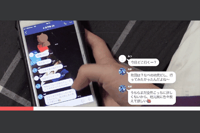
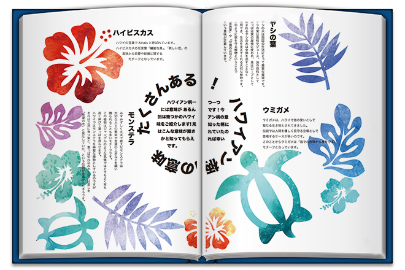
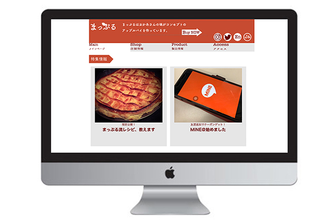

ごあいさつ
この春、メディアデザイン専攻に入学された皆さん、おめでとうございます！
新型コロナウイルスの影響もあり、新入生向けガイダンスの時期もかなり遅くなってしまいました。
「入学を決めたのはいいけれど、自分の専攻がどういうことをするのかよくわからない…」と不安に思っている方もいるのではないでしょうか？
「MD First Greet」では１年次がどういうことを学ぶのか？を紹介いたします。
※こちらの内容は2018-2019年のカリキュラムのため、皆さんが受講する内容と変わる可能性があります。
1年前期
メディアデザイン特別演習/グループ課題
入学してから気づいたこと、不便に思っていることを解決する課題です。
解決する方法は、自分たちができることであれば手段を問いません。
過去には、
●学食の列を分散させるためにメニュー表を貼る位置を考えた
●喫煙所の使い勝手を良くするために模型を作った
などの柔軟な発想の作品が生まれました。
グループ課題のため、ここで友達ができる事例も数多く発生しています。
1年後期
メディアデザイン基礎演習Ｂ/映像製作
1年後期
メディアデザイン基礎実習B/DTP
DTPとはDeskTopPublishingの略称です。
Adobe InDesignというソフトを使って自分が興味のあることをテーマにした、自分だけの本を作ります。
楽しみながらエディトリアルデザインの基礎が学べます。

1年後期
メディアデザイン基礎実習C/Web
Webサイトを作るため、HTMLやCSSというプログラミング言語を学びます。
最終的にはトップページから複数のページにリンクが飛ぶサイトをデザインからコードを打つところまで作ります。

1年次で様々なスキルを習得し、多くの学生がそれぞれの得意分野を活かして活躍しています。
メディアデザイン専攻は他専攻と比較して、実践的なスキルを『はじめて』から学ぶ機会に恵まれています。
新入生のみなさんが楽しんで学校生活を送れるよう応援しています！